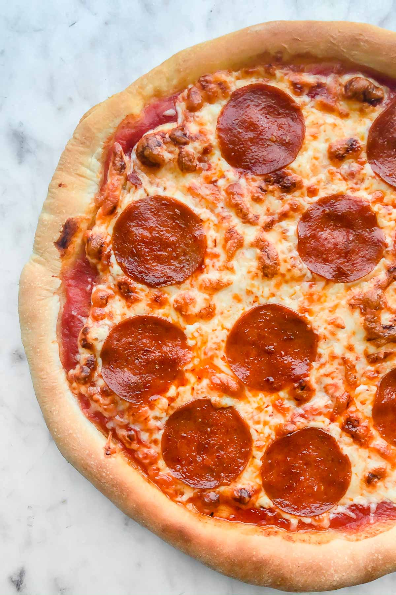

World's Best Pizza

Description
This is a great recipe when you don't want to wait for the dough to rise. You just mix it and allow it to rest for 5 minutes and then it's ready to go! It yields a soft, chewy crust.
Learn how to make the best pizza crust of your life with just a few ingredients, find out how to shape the dough, and get our best storage secrets.
Ingredients
- Yeast
- Sugar
- Bread Flour
- Olive Oil
- Salt
Steps
- Step 1: Gather all ingredients. Preheat oven to 450 degrees F (230 degrees C), and lightly grease a pizza pan.
- Step 2: Place warm water in a bowl; add yeast and sugar. Mix and let stand until creamy, about 10 minutes.
- Step 3: Add flour, oil, and salt to the yeast mixture; beat until smooth. You can do this by hand or use a stand mixer fitted with a dough hook to make it easier.
- Step 4: Let rest for 5 minutes.
- Step 5: Turn dough out onto a lightly floured surface and pat or roll into a 12-inch circle.
- Step 6: Transfer to the prepared pizza pan.
- Step 7: Spread crust with sauce and toppings of your choice.
- Step 8: Bake in the preheated oven until golden brown, 15 to 20 minutes. Remove from the oven and let cool for 5 minutes before serving.
Go back